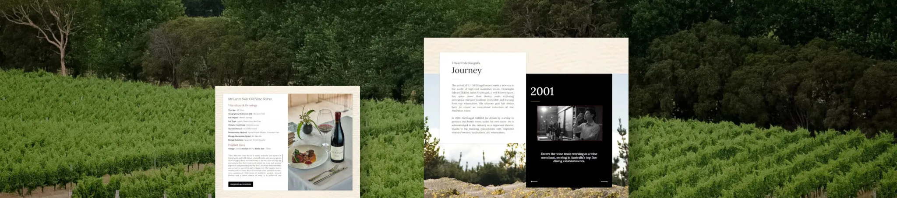
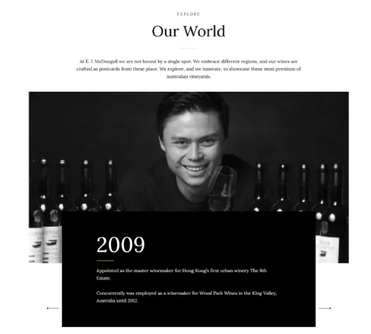
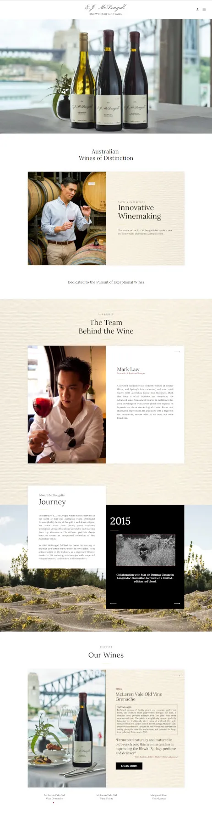
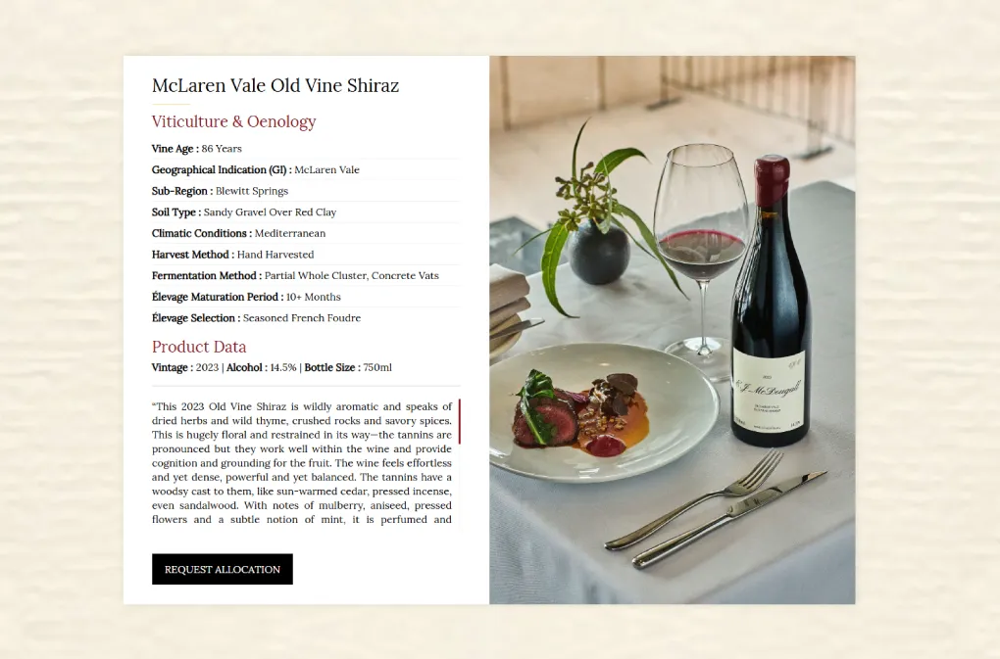

E. J. McDougall Wines heralds a daring new chapter in premium Australian winemaking
E. J. McDougall Wines heralds a daring new chapter in premium Australian winemaking. Oenologist Edward (Eddie) James McDougall leads a brand with over two decades of winemaking experience globally to bring together heritage, innovation, and terroir and create an exquisite collection of limited-edition Australian wines.
Challenge:
To create a luxurious digital presence that captured the exclusive and refined nature of its limited-edition releases, the E. J. McDougall Wines website needed to tell the brand story elegantly, facilitate eCommerce functionality seamlessly, and create a frictionless browsing experience, whilst standing out from the crowded marketplace of wine labels.


Our Approach
To design a luxury digital identity that is consistent with the prestige of the wines.
To design an immersive storytelling and digital and experiential journey mapped to Eddie’s journey and vision.To design a monetisation and conversion focused and eCommerce experience to sell E. J. McDougall limited releases.
Design Phase
We started the project with a design-first ethos, with a vision to create a digital experience that reflected a sense of timelessness, craftsmanship, and the global adventure of E. J. McDougall Wines.
The base was a clean, minimal interface that considered a thoughtful color palette of earthy Australian tones inspired by the natural landscape to ground the place and origin of the brand.
To create depth and visual richness, we opted for full-screen imagery and parallax scrolling to promote an experience of storytelling immersion.
The user experience and content architecture was designed for intuitiveness and discovery, leading visitors through the key sections, including About, Wines, Journal, and Contact. Each section was purposely designed to simplify and highlight core storytelling elements-Eddie’s personal journey, the influence of terroir, and the philosophy of his winemaking.
We paid special attention to the product pages, elevating them to give a sense of the rarity and craftsmanship of each wine release and to balance narrative content with functionality.
Technical Build
On the technical side, the website was built on Shopify, creating an eCommerce experience that could scale and be maintained with relative ease, while also optimizing technical performance and mobile responsiveness.
User Features
Given the limited availability and exclusive nature of E. J. McDougall Wines, we designed the website to reflect a more curated and intentional purchasing process-mirroring the rarity of the product itself.
Rather than allowing open access to product pricing and checkout, the website invites visitors to first express their interest in a particular wine. Once submitted, the request is reviewed and vetted by the brand’s team to ensure alignment with their collector-focused ethos.
Only after approval are users granted access to view product pricing and proceed with a purchase, creating a sense of exclusivity while giving the brand greater control over distribution. This approach not only maintains the prestige and scarcity of the collection but also builds a deeper connection with buyers who genuinely value the craftsmanship behind each bottle.
This gated model reinforces the brand’s identity as a boutique, collector-oriented wine label, and enhances the sense of privilege associated with owning a bottle of E. J. McDougall wine.
Result
Through the use of an application-based purchase model, the platform did not just create a feeling of exclusivity; it also allowed the brand to curate a qualified and authentic customer base. This tactic established a level of anticipation on each release and enabled them to protect the integrity of the limited-edition wines. On the backend, the Shopify-powered build has given the E. J. McDougall team real ease to manage inventory, customer applications and product releases while requiring very little overhead and maximum control. In only a few weeks since launch, the site had:
– A high volume of qualified interest applications
– Positive response from biodynamic wine community
– Positive referrals from industry peers
– A natural alignment between brand identity and their digital footprint
More importantly, the website has transcended a transactional platform, becoming a flagship for storytelling, collector engagement and ongoing exploration of E. J. McDougall’s story.
